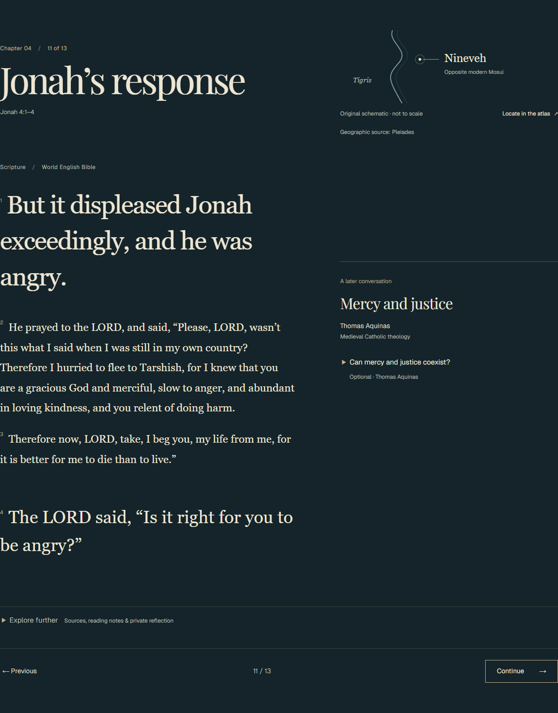
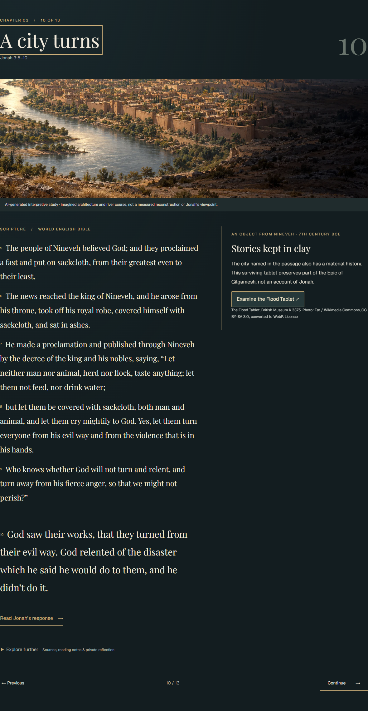
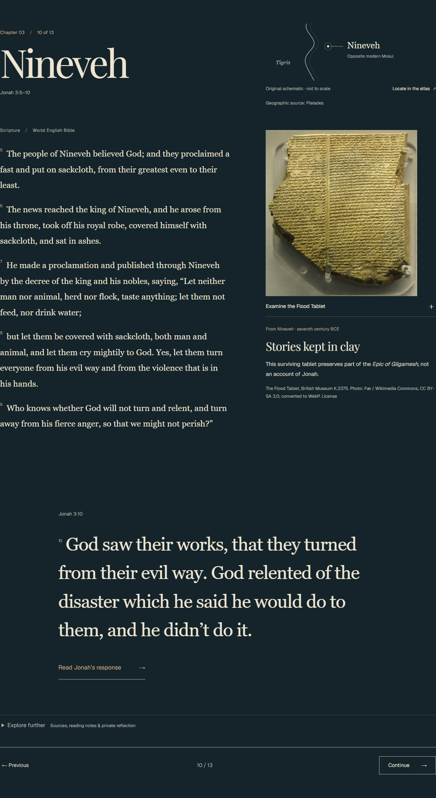
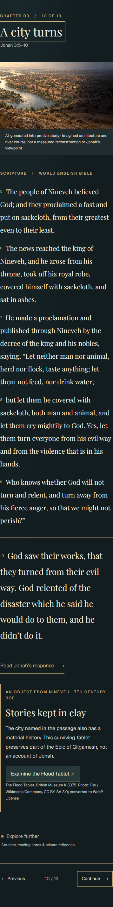
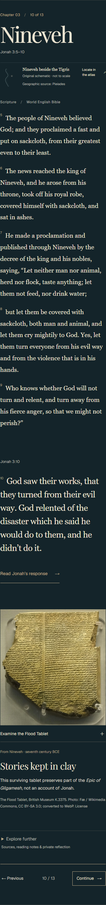
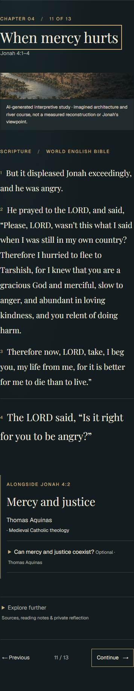
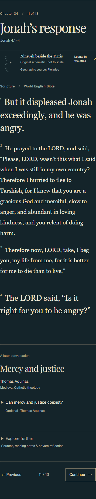

Jonah’s response · 1440px



Actual Chrome rendering of the existing reader. Starting PR #34 (f71c644) compared with this revision. Draft design evidence; no production or editorial approval.
Open the local reader · Capture diagnostics






